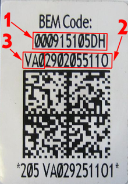

For vehicles with battery monitoring, several parameters are calculated and controlled. For example, battery charging, resting voltage, and energy saving functions. To control this correctly, a battery designated by the manufacturer has to be installed and adapted to the control unit. The following parameters shall be entered when replacing the battery.
Part number (number 1 in figure).
Serial number (number 2 in figure), corresponds to the last 10 characters in the number-letter sequence.
Manufacturer (number 3 in figure).
Example of feed from battery in figure:
Part number: 000915105DH
Serial number: 2902055110
Manufacturer: VAO (Varta)

The adaptation shall only be done when replacing the battery since all historic data regarding battery status is erased.
The control unit only approves part numbers intended for the car in question.
Test conditions:
Ignition on.
New genuine battery installed.
Procedure:
Select the function: "Battery adaptation", press "OK".
Existing adaptation values for the battery are shown. Press "YES" to enter new values.
A dialogue box with field for part number is shown. Enter the part number (number 1 in figure) without spaces and using capitals. Press "OK".
A drop-down list with manufacturers is shown, select manufacturer (number 3 in figure). Press "OK".
A dialogue box with field for serial number is shown. Enter the serial number, 10 characters (number 2 in figure) without spaces and using capitals. Press "OK".
The adaptation is performed.
The new saved adaptation values are shown.
Press "OK" to exit the function.
If the function fails, check the test conditions and repair any faults.